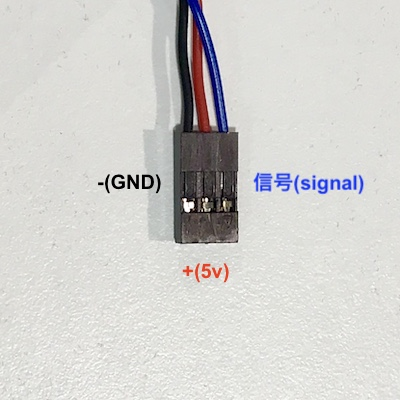

インプットデバイス（センサー）
周辺環境情報を取得し送信する。
人間でいったら「感覚器官」。耳や目、皮膚など。
デジタルセンサーとアナログセンサーがあり、デバイスそのものは、
デジタルはHIGHかLOW（0か1）などの数値を離散的に返し、
アナログは0〜1023などの値を概ね電圧を使い連続的に返す。
デバイスによっては，デジタル信号を返すものもある。
- アナログセンサー
- 信号が連続的に変化するセンサー
- ex: 暗い＞＞ちょっと暗い＞＞普通＞＞ちょっと明るい＞＞明るい
- デジタルセンサー
- 二値化された信号が送られるセンサー
- ex: 暗い＜＞明るい
今回使うセンサー
デジタルセンサーの値の取得
デジタルセンサーで情報を取得し，パソコンのシリアルポートから値を受け取ってみる
事前準備
- デジタルセンサーを用意する
- 電源を入れていない状態で，センサーをArduinoにつなぐ
- センサーから出てきている線は3本
- それぞれ以下のような配置 
- ジャンパー線を使って，Arduinoと接続する信号はD0番ピン


！写経！
//getDigitalSensVal
void setup() {
// 2番ピンのモードをインプットに設定
pinMode(2, INPUT);
// 9600bpsで通信をするように，シリアルポートを初期化
Serial.begin(9600);
}
void loop() {
// 2番ピンの値を読み，sensVal変数に格納
int senVal = digitalRead(2);
// 読み込んだ値をシリアルポートに（IDEで読める形で）送信
Serial.println(sensVal);
// 安定的に値を読めるように，1/1000秒まつ
delay(1);
}
アップロード＆値を取得
- 先ほどの手順と同様に検証後のアップロード
- 組み込みLEDがフラッシュしたら、エディタの左側にある"Monitor"を開く
task
- 色々な種類のデジタルセンサーを使って、返ってくる値を確認する
アナログセンサーを使ったインタラクション
センサーで情報を取得し，閾値を超えたらLEDを光らせる
事前準備
- アナログセンサーを用意する
- 電源を入れていない状態で，センサーをArduinoにつなぐ
- センサーから出てきている線は3本
- それぞれ以下のような配置
- ジャンパー線を使って，Arduinoと接続する信号はA0ピン
！写経！
//getAnalogSensorVal
void setup() {
// 9600bpsで通信をするように，シリアルポートを初期化
Serial.begin(9600);
// 13番のピンモードをアウトプットに設定
pinMode(13, OUTPUT);
}
void loop() {
// アナログピン0(A0)の値を読み，セットバリュー変数に格納
int sensVal = analogRead(A0);
// 条件分岐 閾値を800に設定
if (sensVal >= 800) {
digitalWrite(13, HIGH);
} else {
digitalWrite(13, LOW);
}
// 読み込んだ値をシリアルポートに（IDEで読める形で）送信
Serial.println(sensorValue);
// 安定的に値を読めるように，1/1000秒まつ
delay(1);
}
task
- 色々な種類のアナログセンサーを使って、値を確認しながら，閾値を変える
今週の課題：複数のセンサーを使い，センサーの状態に合わせて，LEDのフラッシュパターンが変わるプログラムを作成する
例えば，人感センサーと，照度センサーを使い，
- 人感センサーのみが人を検出したら，LEDが点灯
- 照度センサーのみが閾値を超えたらLEDがゆっくり点滅
- 人感検出かつ，照度センサーの閾値を超えたらLEDが素早く点滅
- どちらも検出なし，閾値下回るだったら消灯